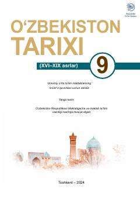

OT9-sinf o'quvchilari uchun XVI-XIX asrlar O'zbekiston tarixi darsligi.
Ushbu darslik umumiy o'rta ta'lim maktablarining 9-sinf o'quvchilari uchun mo'ljallangan bo'lib, XVI-XIX asrlardagi O'zbekiston tarixi, siyosiy vaziyat va tarixiy jarayonlarni yoritadi. Kitobda Temuriylar davridan keyingi sulolalar, xonliklarning tashkil topishi va ijtimoiy-siyosiy o'zgarishlar haqida ma'lumot beriladi.